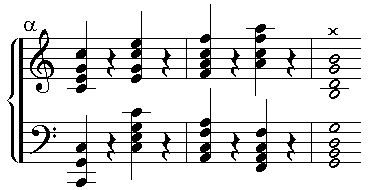
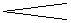

MÉTHODE SURE ET FACILE
POUR LA RÉVISION
DES ORGUES D'ÉGLISES.

OBSERVATIONS PRÉLIMINAIRES.
TOUTE personne chargée de la vérification d'un Orgue nouvellement construit, aura à résoudre les deux questions suivantes :
1o Le facteur d'Orgues a-t-il livré l'instrument tel qu'il l'avait promis ?
2o Comment l'a-t-il exécuté ?
Dans le cas où il y aurait eu pour base un plan ou devis bien détaillé, la première question peut être résolue d'après la simple comparaison de toutes les parties de l'instrument avec ledit plan ou devis, sur lesquels les dimensions des principales parties, ainsi que la qualité des matériaux pour la confection, auront été désignés et convenus.
La deuxième question ne peut être résolue que par une comparaison de toutes les parties de l'instrument avec un autre Orgue, généralement reconnu pour avoir été construit avec toute la précision et selon toutes les règles de l'art ; car le mauvais effet, la médiocrité ou la perfection de l'Orgue peuvent aussi, en grande partie, provenir des dispositions limitées par les plans ou le devis.
Le vérificateur de l'instrument, avant de décider s'il doit le mettre au rang des ouvrages médiocres ou même mauvais, doit prendre en considération les circonstances d'après lesquelles le facteur a été forcé d'exécuter l'ouvrage pour se conformer au devis et apprécier jusqu'à quel point elles ont mis obstacle à la réussite et au bon résultat de l'Orgue, et si en général il a pu, ou non, en tirer le meilleur parti possible.
Parmi les obstacles qui s'opposent à la bonne exécution d'un Orgue, il faut compter :
1o La disposition d'un local défavorable, soit par rapport aux règles de l'acoustique, soit par son exiguïté pour le placement de l'instrument, et principalement par la position de la soufflerie plus ou moins éloignée de l'Orgue.
2o Le manque de connaissances suffisantes dans l'art chez les organistes et les administrateurs d'une fabrique avec lesquels le facteur est obligé de composer les plans et devis de l'Orgue, et de traiter à des prix trop limités pour l'importance du travail ; ces faits leur donnant souvent une idée fausse, elles déterminent et fixent le nombre et l'organisation des jeux entiers contrairement aux proportions du local, et presque toujours il en résulte des défauts graves et souvent irréparables, à ce point que l'instrument produit des effets tout opposés à ceux que l'on croyait obtenir.
Voici une instruction pour en opérer la vérification :
Premièrement. Il est nécessaire de se familiariser avec les effets produits par l'Orgue en plein.
Secondement. Il faut se rendre compte de l'effet produit par chaque jeu, et l'un après l'autre bien distinctement, de leur combinaison, de leur intonation et de leur accord. Car si l'on commençait l'examen de l'Orgue dans l'intérieur, et que l'on trouvât différentes observations à faire sur l'intonation et l'accord des tuyaux, alors le facteur d'Orgues pourrait se justifier en alléguant pour prétexte que par les épreuves faites dans l'intérieur, tous les accessoires de l'instrument ne sont pas restés dans leur état primitif, tels qu'il les a établis ; aussi connaîtra-t-on de suite, par l'épreuve, à quoi l'on doit principalement faire attention à l'intérieur de l'Orgue.
Dans l'épreuve sur l'effet de l'Orgue en plein, on arrange les expositions musicales de différentes manières ; par exemple, on joue un passage assez peu prolongé mais en plein accord, principalement dans les Basses, que l'on accompagne en même temps sur les pédales avec toute leur action et leur étendue possibles. Cette épreuve sert à s'assurer si l'instrument est suffisamment alimenté par la soufflerie, afin que les Basses produisent leurs sons avec toute la force et toute la promptitude nécessaire.
Ensuite, on exécute de petites cadences avec rapidité, en parcourant de la main les touches, pour connaître la vigueur et la promptitude de l'instrument. L'on exécute également des fugues plus ou moins rapides, et dans un style lié, pour saisir la netteté des sons des différents jeux, et la proportion de leurs octaves comparativement entr'eux. C'est ainsi que l'on peut juger si tous les jeux, depuis le premier jusqu'au dernier tuyau, partent tous proportionnellement avec la même précision et la même force, et si la combinaison des fournitures a été convenablement conçue et exécutée d'après les véritables règles de l'art ; sans quoi tout effet de bonne harmonie serait entièrement nul. Pour plus d'assurance dans cette épreuve, on peut encore exécuter un Cantus firmus variant sur les jeux. Après avoir remarqué l'effet produit par l'Orgue joué en plein, on continue la vérification de chaque jeu seul, l'un après l'autre.
Aux jeux d'une taille serrée, comme par exemple à la Gamba ou au Salicional, on doit réunir un autre jeu d'une taille plus grande, mais d'un son doux, comme serait celui d'une flûte en bois de 4 ou 8 pieds, parce que seulement par ce moyen les sons de la Gamba et du Salicional, peuvent se former complètement et se produire dans toute leur beauté, attendu que la nature des jeux d'une taille très-serrée ne permet jamais de produire les sons avec autant de promptitude ni de précision que par les jeux d'une taille plus grande, étant joués seuls. Par de semblables mélanges, on a encore l'avantage d'obtenir des sons d'un caractère particulier. Par exemple, en réunissant au son d'une flûte en bois de 8 pieds le son d'une flûte de 4 pieds ou d'une flûte à cheminée, etc., on pourra de suite remarquer si la distribution et le diapason des jeux sont biens proportionnés pour produire ensemble une harmonie parfaite.
Pour chaque jeu qui peut être employé seul, et pour chaque mélange de plusieurs jeux, on doit exécuter des morceaux de musique convenables à la nature et à la précision du son du jeu que l'on veut vérifier. Afin de compléter le résultat de l'épreuve de chaque jeu, on doit encore le repasser ton par ton, depuis la première touche du clavier jusqu'à la dernière, pour en reconnaître et apprécier la promptitude, le caractère du son, l'égalité ou l'inégalité d'un ton à l'autre, d'une octave à l'autre, ainsi que la proportion des Basses envers le Discant (ou la partie du clavier appelée vulgairement le Dessus), afin d'arriver à l'appréciation de la justesse réelle de chaque jeu de l'instrument.
Dans l'épreuve des sons de l'Orgue en plein, on doit considérer comme défaut, premièrement, si, lorsqu'en touchant des accords pleins, comme serait celui indiqué par l'exemple A,
CLAVIER A MAIN,

Accompagné sur les pédales par octaves.le son n'arrive pas avec assez de rapidité, de promptitude, et dans toute sa vigueur ; ou si, quand on touche un accord semblable à l'exemple X, le son souffre quelque retard, mais arrive néanmoins, après un instant d'hésitation, dans sa force totale  ; alors la cause de ce défaut fort grave est occasionnée, d'abord, par la distance trop grande entre les sommiers et la soufflerie ; et, en second lieu, elle peut aussi provenir de la fausse combinaison et de la mauvaise disposition des porte-vent. Cette faute est d'autant plus grave, que l'on a augmenté davantage, sans nécessité, les courbes des porte-vent, au lieu de les appliquer autant que possible en ligne directe, qui est naturellement la plus courte ; quelquefois aussi le défaut provient des deux causes réunies.
Cependant, avant d'attribuer toutes ces imperfections entièrement à l'ineptie du facteur, il est bon de réfléchir :
Si l'emplacement de l'instrument permettait d'avoir, pour la soufflerie, un conduit de vent plus simple et plus court. Dans tous les cas, il est nécessaire que tous les angles des porte-vent soient élargis du double de leur capacité. Et si, après l'examen des circonstances, l'on reconnaît le droit d'attribuer ces défauts soit totalement ou partiellement au facteur d'Orgues, alors celui-ci est obligé de les corriger en partie ou totalement, si cela est encore possible.
Lorsque les tuyaux de l'Orgue, en touchant des accords pleins, ne parlent pas avec toute leur force et leur fraîcheur de son, mais plutôt d'une manière asthmatique et fausse ; et de plus encore, lorsque de semblables accords ne se soutiennent pas avec la même vigueur, et rendent le son parfois plus fort ou plus faible, alors c'est un grand défaut qui se trouve plus fréquemment dans les octaves graves que dans celles qui sont aiguës, parce que les sons des Dessus souffrent seulement lorsqu'on les accompagne fortement avec les Basses.
On peut également s'assurer de l'existence de ce défaut, en touchant un accord bien pur et bien net dans le Dessus, en l'accompagnant par courts intervalles avec les Basses ; par là on remarque la diminution de fraîcheur, de force et de netteté de l'accord.
Dans le cas où la pédale se trouve alimentée par une soufflerie particulière, on doit la soumettre à une épreuve spéciale.
A cet effet, on peut toucher le second Ut de la pédale avec le pied droit. Après avoir remarqué la promptitude et la pureté du son, on touchera avec le pied gauche les notes C Eb de la grande octave : c'est par ce moyen que l'on pourra de suite juger si le défaut existe par la diminution de la pureté et de la vigueur du premier son touché.
Ce défaut peut avoir sa source dans les gosiers mal construits, dans les porte-vent et encaissement des soupapes au sommier et souvent par toutes les causes réunies ensemble : alors cette faute est également toute attribuable au facteur d'Orgues, qui est obligé de la corriger entièrement.
3o Chaque fois que le son des fournitures, en jouant de l'Orgue en plein, domine par trop, et que l'on entend de manière trop sensible les répétitions dans les octaves, ce défaut peut provenir :
(A) D'une fausse combinaison des tons : car, dans les règles de l'art, chaque note d'une fourniture doit se composer seulement de tuyaux d'octaves et de quintes du ton auquel ils appartiennent ; par exemple :
| PREMIÈRE OCTAVE | { |
Une fourniture de 4 tuyaux par ton doit être composée de la manière suivante : |
| 2 pieds. | 1 pied. | |||
|---|---|---|---|---|
| C composé par des tuyaux qui donnent les sons naturels | C | G | C | G |
| C# | C# | G# | C# | G# |
| D | D | A | D | A |
| Eb | Eb | Bb | Eb | Bb |
| E | E | B | E | B |
| Et cætera. | ||||
| DEUXIÈME OCTAVE | 1 pied 1/2. | |||
| C# | G | C | G | C |
| C | G# | C# | G# | C# |
| D | A | D | A | D |
| Et cætera. | ||||
Si l'on trouve dans ces compositions des tuyaux d'une fourniture qui donnent le son des intervalles des tierces, ou même des quartes, alors le jeu ne serait pas acceptable, attendu qu'un semblable mélange détruirait toute harmonie.
(B) le même défaut peut provenir d'une fourniture trop petite, c'est-à-dire si la grande octave commençait déjà par de très-petits tuyaux, par exemple d'un pied ou de six pouces ; parce que ces tuyaux rendent le son trop criard, et se répètent ordinairement dans la même grandeur dans chaque octave.
Sur ce point, on peut décider, d'après le devis, que le défaut doit être seul attribué au facteur : car si la fourniture avait été exécutée d'après les devis, alors la responsabilité de cette faute serait seulement à la charge de l'administration qui aurait approuvé les plans et devis, et il serait trop tard pour faire des objections sur ce point, attendu que si les combinaisons et les dimensions des fournitures n'étaient pas déterminées dans les conventions, le facteur était naturellement libre de les confectionner à son goût.
(C) D'une intonation trop faible des autres jeux comparativement aux fournitures.
On trouve souvent le son de la fourniture très-fort et coupant ; tandis que le son des autres jeux, principalement des grands jeux de fond, se fait entendre très-faible et sans vigueur.
Une semblable disproportion dans la force des différents jeux de l'Orgue, est toujours la faute du facteur ; et il y aurait trop de difficulté pour y opérer des changements, attendu que ce défaut existe non-seulement dans les tuyaux de l'instrument, mais encore dans les sommiers ; parce que les grands jeux de fond, dans de semblables circonstances, ne se trouvent pas assez alimentés, et ne peuvent l'être davantage, que si la grandeur des gravures des sommiers et des soupapes le permet. Si l'on trouvait donc la grandeur des gravures suffisante pour alimenter convenablement ces tuyaux, il faudrait, pour corriger ce défaut, que les sommiers fussent percés de nouveau, afin de pouvoir donner une autre intonation à tous les tuyaux de l'Orgue. Mais si les gravures étaient trop petite, on ne pourrait corriger le défaut que par la confection de nouveaux sommiers, ce qui équivaudrait à la reconstruction de l'Orgue dans son entier.
(D) Quand le son du Dessus est trop fort proportionnellement à celui des Basses, ou vice versa.
Le premier cas de ce défaut ne peut provenir que du peu d'alimentation des Basses ; alors cette faute ne saurait être facilement corrigée, comme on l'a déjà expliqué.
Le défaut du second cas se trouve plus souvent dans les petites Orgues d'une mauvaise disposition ; et puisque dans les conventions passées avec le facteur d'Orgues, la grandeur des jeux doit être rigoureusement stipulée, ainsi que le diapason d'après lequel elles doivent être construites, et toutes les dimensions des principales parties, on pourra facilement juger à quel point le facteur aura manqué l'exécution de cette partie.
(E) Si en jouant de l'Orgue en plein, il se trouve des tons qui ne parlent pas avec toute leur force et leur pureté de son, mais d'une manière asthmatique et discordante.
Ce défaut ne se trouve pas dans les octaves graves et dans les pédales ; et pour s'en assurer, on ferme tous les registres à l'exception de la fourniture, et l'on cherche, dans la première octave, un ton bien accordé et d'une intonation parfaite, et l'on observe sa précision et sa force. Pendant que l'on fait sonner ce ton, on ajoute, l'un après l'autre, les grands jeux de fond, tels que les 16 pieds et 8 pieds, en observant si la continuité du son reste toujours dans son accord et sa pureté primitive.
Si, par cette épreuve, on reconnaît un changement dans le son, on peut conclure que la pression du vent dans les gravures diminue par trop ; alors les causes de cette diminution de degré du vent sont occasionnées par les gravures des sommiers trop petites, ou par les ouvertures trop petites des soupapes, ou encore par un mouvement insuffisant des soupapes, ou enfin par toutes ces causes réunies à la fois.
Pour reconnaître si le mouvement de la soupape et les ouvertures sont la cause de ce défaut, on enlève la fermeture derrière les touches du clavier, et, tenant ouverts tous les jeux de l'Orgue, on fait sonner le même ton que l'on vérifie, en ouvrant graduellement la soupape au moyen de la vergette. Alors, si le son se produit avec la vigueur convenable, le mal peut se trouver dans le trop petit mouvement des soupapes ; mais si le défaut se trouve également dans l'ouverture des gravures, ce qui est facile à reconnaître, lorsqu'il y a nécessité d'agrandir le mouvement des soupapes plus que la proportion ne le permet (1), cette correction offre plus de difficulté, attendu qu'elle ne peut s'effectuer qu'en démontant les sommiers. Si le défaut gît enfin dans les gravures trop petites des sommiers, alors il ne peut se réparer que par le changement total des sommiers exécutés sur des bases mieux calculées.
Dans l'épreuve successive des jeux, l'un après l'autre, on doit considérer comme défaut :
1o Si dans un jeu il y a des tuyaux qui ne parlent pas, ou qui produisent des sifflements, des cris, des fredonnements ou autres sons désagréables ; de plus, s'il n'y a pas égalité d'intonation, de manière que les uns se produisent faibles et sourds, les autres forts et criards ; si quelques- uns font entendre la quinte ou même l'octave, au lieu du son fondamental ; si encore il y a des tuyaux qui, dans leurs sons, se distinguent des autres par leur lenteur, ou si le jeu entier parle d'une manière très-lente, sans que la nature du jeu puisse le justifier.
La décision pour la correction de tous ces défauts ne peut se prononcer qu'après un examen précis sur le diapason et la construction du jeu.
Après avoir délibéré sur l'impossibilité de se servir de ce jeu en pareil état, le facteur d'Orgues est tenu de le remplacer par un autre.
2o Si le caractère d'un jeu est entièrement manqué, par exemple :
Si les grands jeux de fond (la montre), le violon, la gamba produisent leur effet sans force, et si les bourdons, les flûtes en bois, la flûte à cheminée ont un caractère de son très-coupant et aigre, une semblable intonation ne pourrait être acceptable, et l'on doit décider des causes de tels défauts, par l'examen des tuyaux des jeux en question, en portant la plus grande attention sur leur diapason, leur embouchure et leur alimentation. C'est après cet examen que l'on pourra voir s'il y a un moyen d'y remédier, ou si le jeu doit être remplacé par un neuf.
3o Quand il y a dans l'Orgue des jeux à anches, on les examine l'un après l'autre successivement, et ensuite conjointement avec d'autres jeux convenables. L'on observe si le jeu produit un son agréable, ou si au contraire il est criard, nasillard et désagréable, ou si les languettes parlent avec précision ou trop lentement (dans ces jeux, une lenteur peu sensible ne peut nullement être considérée comme un défaut) ; de plus, si les languettes sont bien égalisées pour la force et le caractère de leur son, et principalement si le son des Basses est en bonne proportion avec le Dessus.
Quand on emploie les jeux à anches avec d'autres jeux de fond qui dépensent beaucoup de vent, il faut observer si la force et la vigueur du son se soutiennent avec régularité.
A cet effet, on peut renouveler la même épreuve que l'on a déjà expliquée pour les fournitures.
Note :
(1) Dans la règle de l'art, le mouvement des soupapes doit être égal à la moitié de leur largeur.